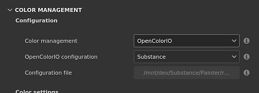

This page lists the color management settings related to OpenColorIO (OCIO).

The project settings can be set when creating a new project via the new project window or by using the project configuration window.
If the OCIO environment variable is present, and specifies a valid configuration file, it will override and disable the settings in UI.
The available settings are:
| Section | Setting | Description |
|---|---|---|
| Configuration | Color management | Define which engine to use to manage colors. Possible values:
|
| OpenColorIO configuration | Which configuration file to use to drive the color management settings. Possible values:
| |
| Configuration file | Path to the OCIO configuration file. Disabled if the configuration mode is not set to Custom. | |
| Color settings | Working color space | The color space used by the engine to work inside the application. This the color space from which textures may be converted to (import) or from (export). |
| Standard sRGB color space | The color space matching the standard sRGB color space (IEC 61966-2-1:1999). This color space is used in several places inside the application:
| |
| Bitmap import color space defaults | 8 bit images | Color space to use by default when importing 8bit image files. |
| 16 bit images | Color space to use by default when importing 16bit image files. | |
| Floating point images | Color space to use by default when importing HDR/EXR image files. | |
| Auto detect color spaces | Allow to define the color space from resources based on specific settings. Possible values:
| |
| Substance material | Material color space default | Define which color space to use for Substance materials color managed input/output (see below for the list of channels). |
| Export color spaces | 8 bit images | Color space to use by default when exporting 8bit image files. |
| 16 bit images | Color space to use by default when exporting 16bit image files. | |
| Floating point images | Color space to use by default when exporting HDR/EXR image files. |
The following roles are supported and allow to change the default selection of color spaces:
| Role name | Description |
|---|---|
| substance_3d_painter_standard_srgb | Role to specify the color space matching the standard sRGB (IEC 61966-2-1:1999). |
substance_3d_painter_bitmap_import_8bit | Role to specify the color space used to import 8bit images. |
substance_3d_painter_bitmap_import_16bit | Role to specify the color space used to import 16bit images. |
| substance_3d_painter_bitmap_import_floating | Role to specify the color space used to import HDR images. |
| substance_3d_painter_substance_material | Role to specify the color space used for color managed channels in Substance materials. |
| substance_3d_painter_bitmap_export_8bit | Role to specify the color space used when exporting 8bit textures. |
| substance_3d_painter_bitmap_export_16bit | Role to specify the color space used when exporting 16bit textures. |
| substance_3d_painter_bitmap_export_floating | Role to specify the color space used when exporting HDR textures. |
The OCIO configurations provided with the application can be used as examples on how to use these specific roles.